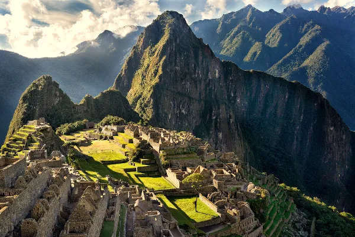
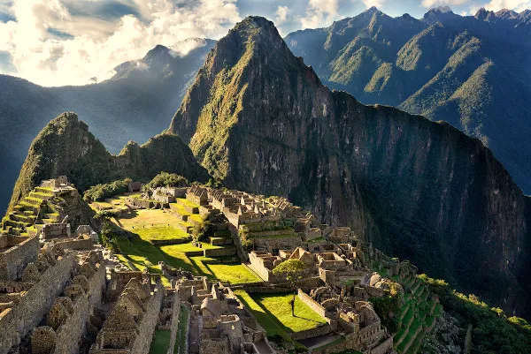

"Muito antes da chegada dos colonizadores europeus, a região que forma hoje o território peruano era habitada pelos povos pré-colombianos, chamados também de povos andinos, por terem se estabelecido nas áreas cortadas pela cordilheira. Assim, na região dos Andes, que se estende desde a Colômbia até a Argentina, compreendendo o Peru, se formou uma das principais civilizações da América Pré-colombiana, o Império Inca. Durante o século XVI, com uma estrutura política já fragilizada, a civilização inca chegou ao fim com a colonização espanhola, que dominou seu território em 1532. Pouco tempo depois, foi instituído o Vice-reino do Peru, com capital em Lima. Após uma tentativa falha no século XVIII, o Peru foi declarado um território independente em 1821. A presença de tropas espanholas, no entanto, perdurou até 1824, quando o país se tornou o último da América Latina a garantir a sua total independência após a derrocada da Espanha.
No ano de 1879, iniciou-se a Guerra do Pacífico, conflito pelo domínio territorial e econômico sobre áreas do deserto do Atacama que ocorreu entre: Peru; Chile; Bolívia. A guerra acabou cinco anos mais tarde, com derrota peruana e boliviana para o Chile. Em meados do século XX, o país também entrou em conflito direto com o Equador, por conta de disputas territoriais na sua área de fronteira. O século XX foi caracterizado por uma série de governos civis sendo depostos por meio de golpes militares, instaurando grande instabilidade política e econômica no país. Somente nos anos 1980 o regime democrático foi definitivamente estabelecido, mas a escalada interna de violência por grupos de guerrilha agravou a crise econômica, chegando ao ponto de o país pedir auxílio ao FMI em 1988. Em 1990, Alberto Fujimori venceu as eleições presidenciais. Seu mandato foi marcado pela hiperinflação e pelas medidas de austeridade que recaíram sobre o povo, que demonstrou sua insatisfação por meio de protestos no início dos anos 2000, levando à renúncia de Fujimori. O Peru elegeu, em 2001, o seu primeiro presidente indígena. O país experimentou a recuperação dos indicadores econômicos e sociais nos anos que se seguiram, o que perdurou até as crises econômicas mais recentes, entre 2015 e 2016. Além disso, a economia sofreu danos com a pandemia de covid-19 e casos de corrupção que eclodiram entre 2020 e 2021. O final de 2020 foi marcado por grandes protestos populares no país, que resultaram na alternância de poder nas eleições subsequentes, ocorridas em meados de 2021."
 
